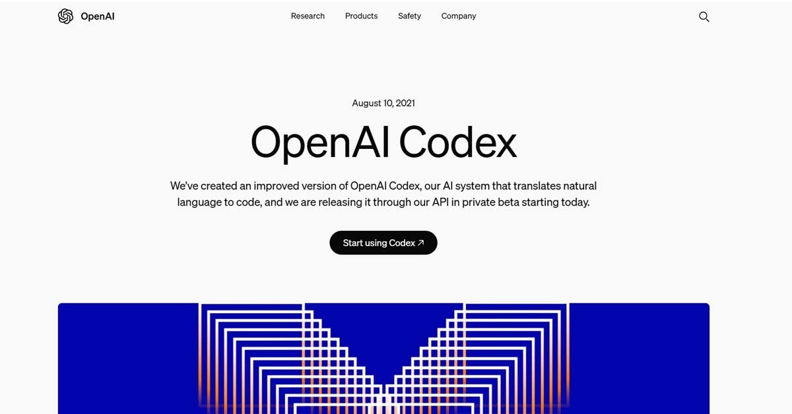
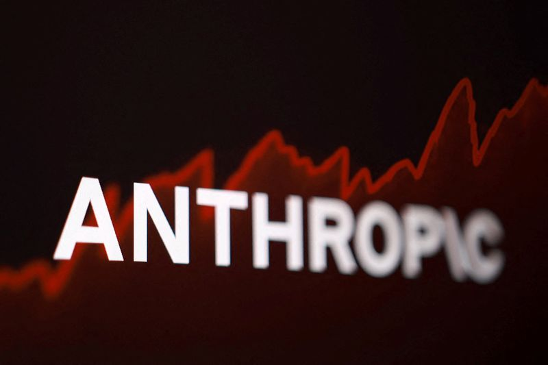
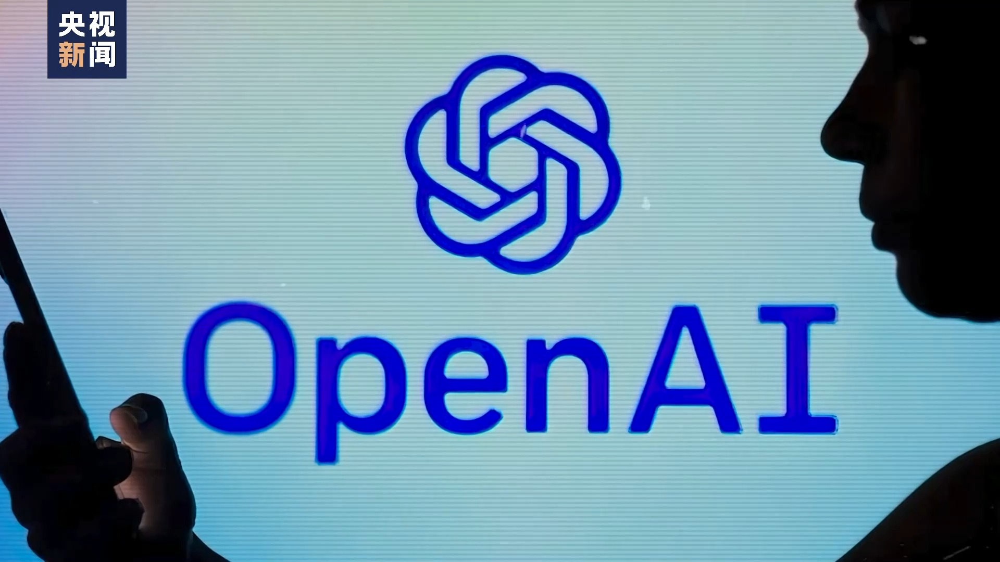
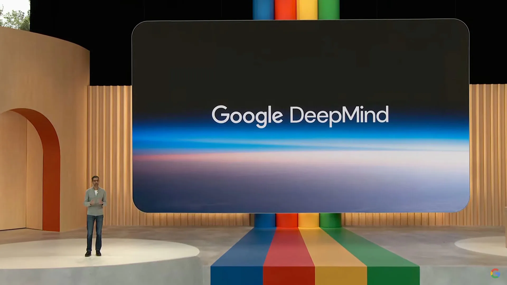
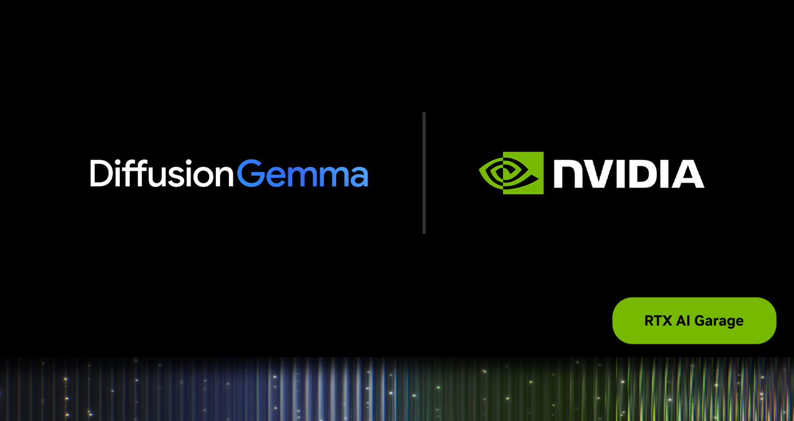
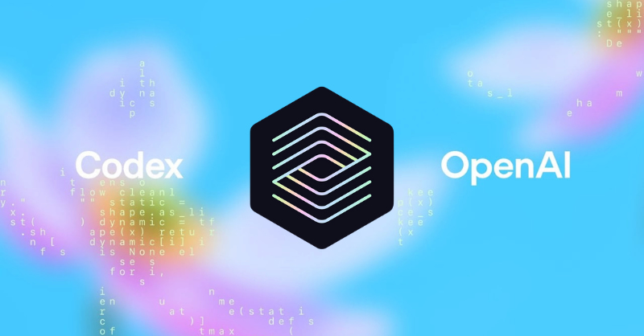
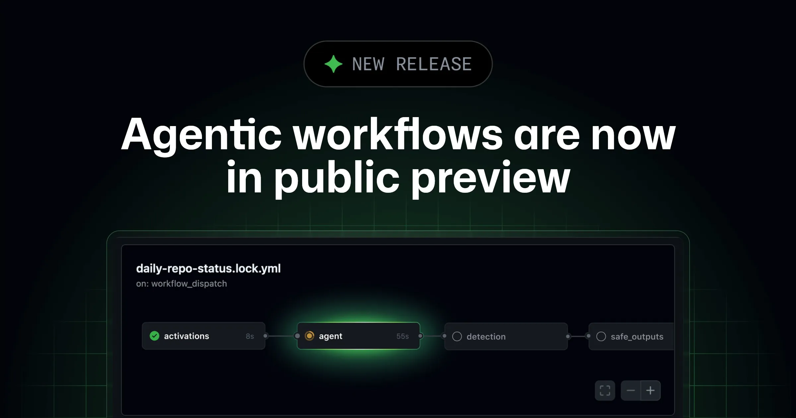
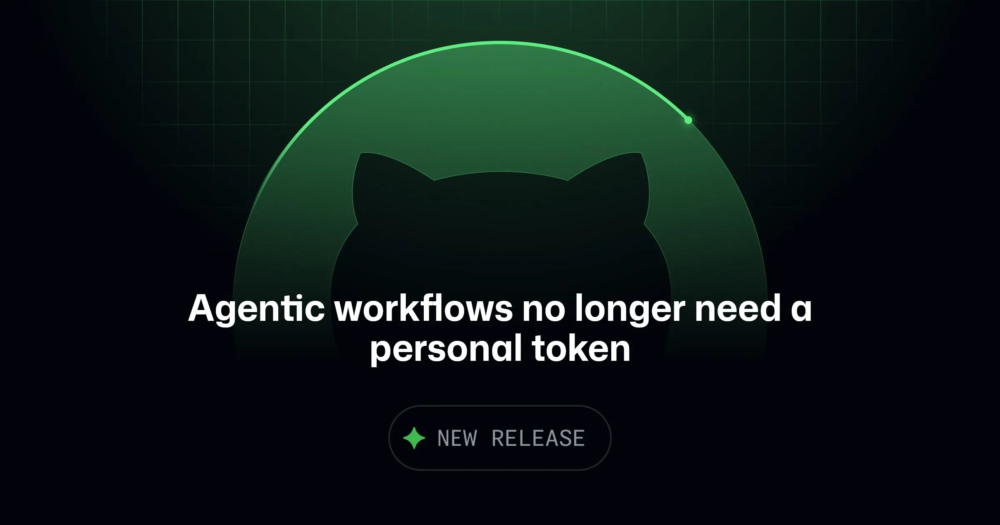
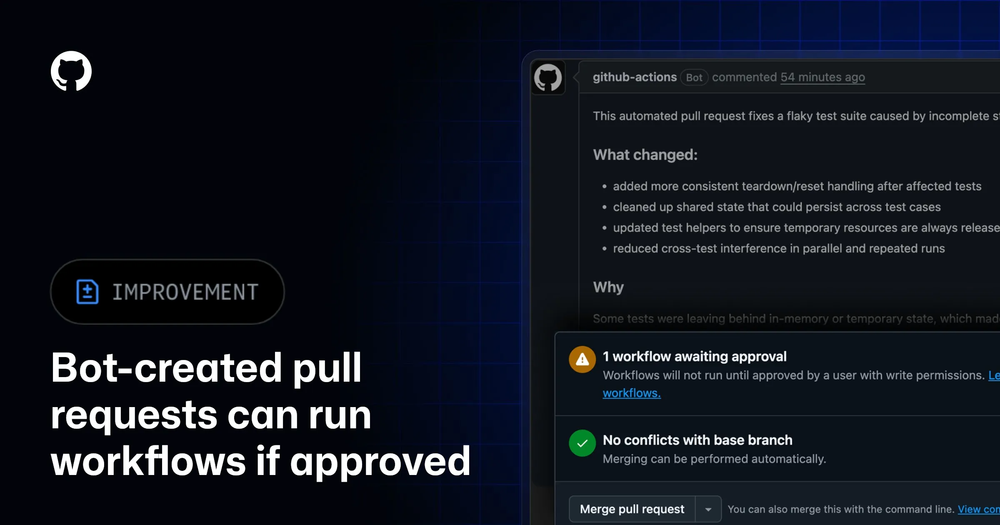

2026-06-12 // VOL_255
Agent 开始进账本
从云、交易到代码流水线，Agent 真正的门票变成预算、审计和责任边界。
今天 AI 圈的主线很清楚：Agent 不再只拼会不会回答，它开始被塞进云采购、企业系统、交易账户、CI 流程和安全账本。OpenAI 买 Ona，Anthropic 找 DXC 和数据中心，GitHub 给 Agentic Workflows 上组织账单，Coinbase 让交易 Agent 直接花钱。AI 终于从演示台走进账本。
📌 今日趋势：Agent 开始进账本
今天的共同主线不是模型又聪明了一点，而是 Agent 被推进真实预算和真实责任里。OpenAI 买下 Ona，是给长时间运行的 Codex 找云执行底座；Anthropic 拉 DXC 进银行、航空和制造系统，是把 Claude 送进老牌企业流程；GitHub 让 Agentic Workflows 用组织账单跑，Coinbase 让交易 Agent 付费拿研究数据，说明 Agent 正在从聊天窗口变成业务支出项。
这对中国创作者和企业的含义很现实：下一阶段比拼的不是谁会写 prompt，而是谁能把 AI 接进订单、代码、财务、客服、研究和合规流程里，同时把花费、审批、日志和回滚管住。创作者要盯能直接减少人工步骤的工具，老板要盯每个 Agent 到底替掉哪段流程，开发团队要把安全扫描和预算上限当成默认配置。
接下来 2-4 周重点盯三件事：一是长跑 Agent 的云执行和计费会不会变成大厂标配，二是企业服务商会不会批量把 Claude、Codex 这类模型塞进传统外包合同，三是交易、代码和内容 Agent 出错后谁背锅。Agent 能干活只是上半场，能进账本、能被审计、能停下来，才是真正的下半场。
01
Key Intelligence
全球要闻

OpenAI
OpenAI 买 Ona 给 Codex 上云
来源: OpenAI · 2026-06-12 · 原文链接
OpenAI 宣布将收购 Ona，把后者的安全云执行和编排技术并入 Codex 生态，用来支持跨软件和知识工作的长时间运行 Agent。这个动作把 Codex 从一次性代码助手继续往可控云工作台推。
Janet 锐评：
OpenAI 不是在买一个漂亮插件，而是在补 Agent 真正上岗前最脏的一块：运行环境。长任务 Agent 如果没有隔离执行、状态管理和客户可控的云底座，只会变成高级脚本事故制造机。做企业自动化和代码工具的团队该立刻复盘自己的执行沙箱、权限回收和日志保留，别只盯模型回答有多聪明。
Anthropic
Anthropic 让 DXC 带 Claude 进核心系统
来源: Anthropic · 2026-06-12 · 原文链接
Anthropic 与 DXC Technology 宣布多年全球联盟，DXC 将训练数万名 Claude 认证的前线交付工程师，把 Claude 接入银行、航空、保险、制造和政府机构依赖的系统。DXC 称其 AI 原生编排平台 OASIS 默认由 Claude 支撑 Agent 工作流。
Janet 锐评：
Claude 进 DXC，比普通企业客户案例重得多，因为 DXC 管的是别人的核心系统。大模型进银行和航空，不是靠 demo 打动采购，而是靠交付团队、合规流程和出事后的责任链。国内做企业 AI 的公司要看清楚：真正的钱在系统集成和持续交付里，不在卖一个聊天入口里。

Reuters
Anthropic 要租数据中心扛算力
来源: Reuters · 2026-06-12 · 原文链接
Reuters 援引 The Information 报道称，Anthropic 正计划租赁并管理自己的数据中心，并寻求 Alphabet 旗下 Google 为租金支付提供金融支持。模型公司的竞争继续从模型本身延伸到算力、租约和资金安排。
Janet 锐评：
这说明前沿模型公司已经不满足于只买云额度，它们要把算力供应链抓得更紧。账单也很直接：租约、电力、折旧和融资压力会一起压到产品定价上。中国企业买模型服务时别只问哪家更强，要问服务商的算力成本会不会突然转嫁到你的账单上。采购 AI 服务时，把价格调整条款、容量保证和退出方案问清楚，比听路线图更实际。
TechCrunch
Coinbase 让 Agent 下单进交易台
来源: TechCrunch · 2026-06-12 · 原文链接
Coinbase 推出可执行交易并付费获取高级研究数据的 AI Agent。该 Agent 可使用 x402 协议访问数据和 API，当前支持加密货币现货和衍生品交易，后续计划支持股票和预测市场。
Janet 锐评：
Agent 碰交易账户，刺激归刺激，但风险也立刻变硬。以前 AI 错了最多写错一段文案，现在错了可能是真金白银下错单。做金融、投研和电商自动化的团队必须把交易额度、确认节点、撤单逻辑和异常报警做进产品骨架，否则所谓自动化就是把亏损速度拉满。

OpenAI
OpenAI 接欧盟透明规则上身
来源: OpenAI · 2026-06-12 · 原文链接
OpenAI 表示支持欧盟关于 AI 内容透明度的 Code of Practice，并强调 provenance 标准和帮助用户识别 AI 生成内容的工具。内容生成越普及，来源标记和生成痕迹越会变成产品默认项。
Janet 锐评：
透明度听起来像合规部门的事，其实会直接改变内容工具的产品设计。以后给欧洲客户做生成式内容，不能只交一张图或一段文案，还要交生成记录、来源声明和可解释的标记。国内出海工具团队别等罚单来了才补，素材链和水印策略现在就该写进工作流。内容团队也要开始保留提示词、素材授权和版本记录，免得交付后被追着问来源。
02
Model Updates
模型动态

Google DeepMind
DeepMind 给多 Agent 安全投钱
来源: Google DeepMind · 2026-06-12 · 原文链接
Google DeepMind 联合 Schmidt Sciences、Cooperative AI Foundation、ARIA 和 Google.org，宣布投入多 Agent AI 安全研究。重点从单个模型行为扩展到多个智能体之间的协作、竞争和失控风险。
Janet 锐评：
多 Agent 不是多开几个聊天窗口那么简单，它会把责任切得更碎，也更难追责。一个 Agent 犯错还能查日志，一群 Agent 互相递任务，错误就可能在链路里被放大。做自动化工作流的团队现在就该限制 Agent 之间的权限传递，别让一个小工具意外变成全公司最高权限。
The Next Web
TacticAI 开始预测球场八秒
来源: The Next Web · 2026-06-12 · 原文链接
The Next Web 报道称，Google DeepMind 的 TacticAI 可基于球员运动预测足球场上未来八秒的战术走势，并向教练提供调整建议，巴西俱乐部 Palmeiras 成为首个在实时开放比赛分析中使用它的球队。
Janet 锐评：
这类体育 AI 的价值不在噱头，而在把视频、空间位置和决策建议压进实时窗口。八秒听起来短，对比赛和运营决策已经很长。内容团队可以借这个思路做视频拆解，企业团队也该学会把预测结果做成可执行建议，而不是只生成一份漂亮分析报告。真正能收费的 AI，会把下一步动作说清楚，而不是只总结刚才发生了什么。

NVIDIA
NVIDIA 让 DiffusionGemma 跑进本地显卡
来源: NVIDIA · 2026-06-12 · 原文链接
NVIDIA 介绍了对 Google DeepMind DiffusionGemma 的本地 AI 加速支持。这个开放模型可并行生成文本，并被优化到 NVIDIA RTX PRO、DGX Spark 和 GeForce RTX GPU 上运行。
Janet 锐评：
本地模型的意义不是马上打败云端旗舰，而是把试错成本砍下来。团队做初稿、批量变体、内部知识处理时，很多任务根本不需要每次都上云排队付费。独立开发者和小工作室可以把本地模型当草稿机，商业交付再用更强模型精修，这比盲目追最高分更划算。谁能把本地推理做得稳定易用，谁就能吃到预算敏感团队的长尾需求。

OpenAI
Codex 被拿去算黑洞模型
来源: OpenAI · 2026-06-12 · 原文链接
OpenAI 发布应用案例，介绍天体物理学家 Chi-kwan Chan 使用 Codex 构建黑洞模拟，帮助研究极端物理并测试广义相对论。Codex 的叙事继续从写业务代码扩展到科学计算和研究工程。
Janet 锐评：
这类案例不是给普通人看黑洞有多酷，而是在证明代码 Agent 可以进入高门槛研究软件。科学计算最怕的是代码复杂、验证慢、改动风险高，Agent 如果能帮研究者快速重构和检查，就能省下大量低价值工程时间。科研工具和工业仿真团队要盯这条线，模型真正赚钱的地方可能是专业代码里的脏活。
03
Tech Insights
技术深度

GitHub Changelog
GitHub Agentic Workflows 开放预览
来源: GitHub Changelog · 2026-06-12 · 原文链接
GitHub 宣布 Agentic Workflows 进入 public preview，把 Copilot 与 Actions、工作流文件和组织级运行方式进一步结合。开发者可以把 AI 任务从手动聊天推进到可重复的工程流水线。
Janet 锐评：
这才是代码 Agent 该去的地方：不是陪你闲聊，而是进入 CI、任务队列和审批流程。问题也会同步变硬，谁触发、花多少钱、能改哪些文件、失败怎么回滚，都不能靠人肉盯屏。工程团队可以小范围试，但必须从低风险仓库开始，把预算和安全策略先写死。让 Agent 进流水线之前，先把它当成一个会犯错的新同事，而不是神奇自动按钮。

GitHub Changelog
GitHub 让 Agent 不再拿长期 PAT
来源: GitHub Changelog · 2026-06-12 · 原文链接
GitHub 更新 Agentic Workflows，组织仓库中的 Agentic Workflow 不再需要创建和存储个人访问令牌，可通过 Actions token 和组织账单直接运行，同时由 cost centers 和预算工具管理消耗。
Janet 锐评：
长期 PAT 是自动化系统里的老雷区，GitHub 这次等于承认 Agent 要规模化就不能靠个人令牌裸奔。对企业来说，这不是小优化，是安全边界从个人电脑搬回组织治理。国内团队做 Agent 平台也一样，别让员工用私钥和个人 token 扛生产流程，早晚会炸在审计里。
GitHub Changelog
GitHub 把 AI 用量报表细分
来源: GitHub Changelog · 2026-06-12 · 原文链接
GitHub 更新 AI usage report，并在相关更新中把 Copilot、企业管理和成本工具继续打通。AI 编码进入企业后，管理者需要看到谁在用、用在哪、花了多少，而不是只看订阅席位。
Janet 锐评：
AI 工具一旦进企业，老板最关心的不是“员工开心吗”，而是钱花到哪里去了。用量报表会把 Copilot 从福利变成成本中心，也会逼团队拿出产出证据。创作者团队和小公司也该学这一套：订阅费不贵，隐形浪费很贵，先把工具账单和实际产出对上。每月砍掉没人用、没产出的 AI 订阅，比多买一个新工具更清醒。

GitHub Changelog
GitHub 让 Bot PR 人工放行跑 CI
来源: GitHub Changelog · 2026-06-12 · 原文链接
GitHub 宣布由 github-actions bot 创建的 pull request 在用户批准后可以运行 CI/CD 工作流，这与 Copilot 生成的 PR 行为一致。此前这类 PR 可能无法跑完整 CI，导致变更在缺少验证时被合并。
Janet 锐评：
AI 生成代码最怕两种极端：完全不让跑，或者直接带着敏感权限跑。GitHub 这次走的是中间路线，先让人类批准，再让流水线验证。所有用 Agent 改代码的团队都该照抄这个原则：自动生成可以，人类放行必须有，CI 证据必须留。否则你不是在自动化研发，而是在自动化制造没人敢碰的风险。
04
Investment & Prediction
投资视角 · 大胆预测
今日核心预测
GeekWire
Prometheus 融资把工程 AI 炒热
来源: GeekWire · 2026-06-12 · 原文链接
GeekWire 报道，Jeff Bezos 与 Vik Bajaj 共同领导的 AI 工程初创公司 Prometheus 完成 120 亿美元 Series B 融资，估值达到 410 亿美元。公司目标是用 AI 帮助工程师设计和制造物理产品。
Janet 锐评：
120 亿美元融资不是普通泡沫，是资本在押“AI 从写字楼走进工厂”。物理世界的工程 AI 很肥，但它不像写文案那样容错高，材料、仿真、制造和安全全都要过硬。中国制造业服务商别只喊智能设计，能不能减少试制次数、缩短验证周期、降低报废率，才是客户愿意付钱的理由。
PR Newswire
PhoenixAI 融资押 Agent 数据库
来源: PR Newswire · 2026-06-12 · 原文链接
PhoenixAI 宣布完成 8000 万美元 Series B 融资，由 Sky9 Capital 领投。公司定位为 Agentic AI Database，资金将用于 AI 原生数据库研发、市场扩张和面向监管行业的治理能力。
Janet 锐评：
Agent 跑起来以后，数据库会重新变成战场。普通数据库存数据，Agentic 数据库要处理上下文、行动记录、权限和可追溯状态。国内做 RAG、知识库和企业搜索的团队要警惕：客户以后要的不是“能搜到”，而是“Agent 用了什么数据、为什么这么做、出了错能不能回滚”。
PR Newswire
Turnout 融资卖 AI 消费维权
来源: PR Newswire · 2026-06-12 · 原文链接
Turnout 宣布完成 3500 万美元 Series A 融资，定位为 AI 驱动的消费者倡导服务，帮助用户处理复杂政府和金融流程。公司称自种子轮以来客户基础增长五倍，已记录超过一千万分钟 AI 支持时长。
Janet 锐评：
这类产品抓的是普通人最烦的流程：电话、表格、申诉、证明和等待。AI 如果能替用户跑这些流程，价值比陪聊高太多。中国创作者和工具团队可以借鉴这个方向，别只做通用助手，去找那些用户愿意付钱逃离的麻烦流程，比如退款、报销、签证、保险和售后。真正的好产品不是让用户多和 AI 聊十轮，而是少被系统折磨十次。
05
Creator Toolbox
创作者工具箱
Janet 快车箱
DATA SOURCES: OpenAI, Anthropic, Reuters, TechCrunch, Google DeepMind, The Next Web, NVIDIA, GitHub Changelog, GeekWire, PR Newswirejanet-public-site · © 2026 Janet Yao